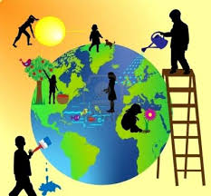

El 22 de abril de 1970 hubo una manifestación en Estados Unidos para que se creara en el Gobierno una agencia ambiental que trabaje sobre las problemáticas medioambientales.
El impulsor de la protesta fue el senador y activista ambiental Gaylord Nelson, quien convocó a miles de universidades, escuelas primarias y secundarias entre otras comunidades a participar del pedido. Gracias a la expresión social el Ejecutivo estadounidense creó Environmental Protection Agency (Agencia de Protección Ambiental) y varias leyes de protección del medio ambiente.
La intensión es sensibilizar a la humanidad de que es parte del planeta Tierra y sus huellas marcarán el destino del mundo, por eso reducir (el consumo), reciclar yreutilizar objetos es la forma en que cada uno día a día puede colaborar para evitar la contaminación ambiental.
